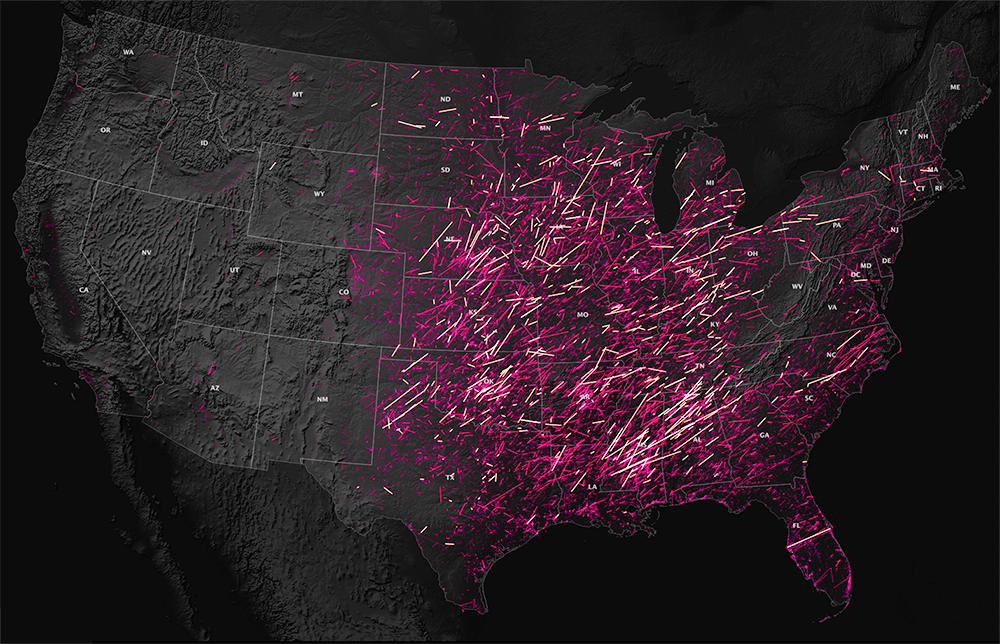

Preamble
In this ninth technical lab, we will complete any remaining steps of Monday’s demonstration lab then turn to steps necessary for the ninth assignment. These lab steps should be used extensively to aid with the completion of the eighth assignment due Sunday evening at 11:59pm.
Data
Original Data Source:

Location of Class 9 Assignment Direct Data Download
To begin the assignment, download and access the assignment directory. Create a new assignment .mxd and connect Data Source Manager to the assignment directory to import assignment input vector features:
- Data download includes:
mobile_home_percentage_county.zip1950-2021-torn-aspath.zip(Tornado Paths, not points)

Note that the Tornado data .prj (top) is not the same as the .prj for the mobile home data(bottom). Utilize the projected mobile home data as the project and layer CRS. Thus, reproject the Tornado data from WGS84 to USA Contiguous Lambert Conformal Conic.
Assignment Step 1
With the assignment data downloaded to your local drive, make a connection via ArcCatalog. Make sure to load the mobile home data first to set the project CRS. Then load the tornado data, and immediately reproject the tornado data to the project CRS USA Contiguous Lambert Conformal Conic with the EPSG code as EPSG:102004:
Search for Project tool:
EPSG:102004- Next, load
1950-2018-torn-aspath. Reproject and export the layer to the project directory:
EPSG:102004EPSG:102004Export the reprojected feature as tornado_paths.shp into your assignment folder:
EPSG:102004Assignment Step 2 - Overlay Geoprocessing
Currently many tornado paths in the historical dataset tornado_paths cross multiple counties. In order to derive a count of tornadoes per county, there are several overlay techniques that could be utilized. Here we will use Identify; the result will be a polyline dataset that contains the attributes of the counties in the mobile_home_counties along with those of the original tornado_paths.
Run Identify as follows and output as tornado_county.shp:

This geoprocessing step may take upwards 10 or 15 minutes.
- In review of the results, Abbeville, SC is the first county in the attribute table (sort on
RIGHT_COUN). Note that the tornado segments are now cut at the county boundary as a result of the Identify geoprocess:

Assignment Step 3 - Table Development
With the Identity complete, a summary table will be developed and joined to mobile_home_counties. The field FIPS will be utilized as the summarization column, gaining a summary count of each tornado segment per FIPS county code. This table will then be joined to mobile_home_counties via the FIPS column for further analysis in the attribute table.
LEFT_FIPSLEFT_FIPS columnLEFT_FIPS column; export result as FIPS_join.dbf
FIPS_join.dbf to assignment folderFIPS_join.dbfFIPS_join.dbf and `mobile_home_percentage_county.shpExport the joined feature as tornado_counties_joined as a feature class to the default.gdb:
By exporting to the default.gdb, calculations will all for NULL values where there are counties whose counts are zero.
Assignment Step 5 - Normalization by Geography Attribute
As counties vary significantly in size, the absolute count of tornadoes per county is not yet comparable. To do so, a constant of 100 sq. miles calculated per county, followed by the normalization of counts by geography.
First, access tornado_counties_joined from within the default.gdb. Create a column with type double, titled sq_miles:
Next, create another column, type double, titled count_100:
Next, use the following equation within the Field Calculator at the sq_miles column:
([Shape_Area]*0.00000038610)/100
This allows for the normalization of counties to per 100 square miles in place of absolute square miles.
Next, divide the tornado count by the new square mile calculation within the new column count_100:
[Cnt_LEFT_F] / [sq_miles]
The result will be new values for the normalized tornadoes per 100 square miles across each county:
The very large count record in the attribute table is not an actual county; its the count of tornado incidents produced from the Identify geoprocess that fall outside any county polygon. It can be disregarded for the time being.
Assignment Step 6 - Rank Assignments
The final step before thematic design is the assignment of four risk conditions based on tornado incidences and housing exposure.

This risk maxtrix uses the median societal exposure and tornado incidence scores as the break between high and low exposure and incidence - source
- 4 Rank Conditions:
11.22% = Median Mobile Home percentage per County
3.22 Median Tornado segments per 100 miles, per county (when producing this statistic, NULL values are assumed to be value 0.
- Condition #1 -
- Low Incidence, Low Exposure
- LI = <3.22
- LE = <11.22
- Low Incidence, Low Exposure
- Condition #2 -
- Low Incidence, High Exposure
- LI = <3.22
- HE = >=11.22
- Low Incidence, High Exposure
- Condition #3 -
- High Incidence, Low Exposure
- HI = >=3.22
- LE = <11.22
- High Incidence, Low Exposure
- Condition #4 -
- High Incidence, High Exposure
- HI = >=3.22
- HE = >=11.22
- High Incidence, High Exposure
Assign each rank 1 - 4 based on the conditions via Select by Attributes within the tornado_county_joined feature class. Remember to clear selections after each rank assignment:
Utilize fields count_100 and MobileHome for Incidence and Exposure, respectively.
To Start, make each selection condition #1 through #4 within count_100 and MobileHome. Create a new column rank, type short integer and make assignment 1, 2 , 3 and 4 in this new column based on each selection, respectively.
Populate with value -999 to start. Any records with -999 resulting are simply the NULL values - counties that have no tornadoes. Those can either be symbolized in the final map as ‘low’ or as ‘No Incidence Records’:
rankrankSelection and Assignments for Conditions:
Make sure to clear selections after each condition is assigned in the rank column:
Condition #1:
- Select by Expression:
count_100 <3.22 AND MobileHome <11.22 - Field Calculator within
rank= 1
- Select by Expression:
Condition 1 should result in 629 records assigned this #1 Low Incidence, Low Exposure rank.
Condition 1 Assignment via Field Calculator:
Condition #2:
- Select by Expression:
count_100 <3.22 AND MobileHome" >=11.22 - Field Calculator within
rank:
- Select by Expression:
Condition 2 should result in 889 records assigned this #2 Low Incidence, High Exposure rank.
Condition 2 Assignment via Field Calculator:
Condition #3:
- Select by Expression:
count_100 >=3.22 AND MobileHome <11.22 - Field Calculator within
rank:
- Select by Expression:
Condition 3 should result in 850 records assigned this #3 High Incidence, Low Exposure rank.
Condition 3 Assignment via Field Calculator:
Condition #4:
- Select by Expression:
count_100" >=3.22 AND MobileHome >=11.22 - Field Calculator within
rank:
- Select by Expression:
Condition 4 should result in 656 records assigned this #4 High Incidence, High Exposure rank.
Condition 4 Assignment via Field Calculator:
Assignment Step 7 - Thematic Design
If you have not done so, save the assignment project .mxd with calculations now completed. Once complete, thematic assignments will be given as follows:
As seen in the resulting map, condition 4 exhibits a spatial pattern of concentration centered on the southeastern US counties due to the frequency of tornadoes (Hazard) intersecting human geography by building type (Vulnerability + Exposure).